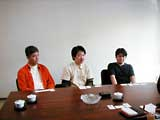
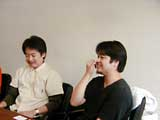
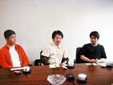

|
● 『メタルスレイダーグローリー』には続きや番外編があるんですか。ゲームをプレイしてみると、シリーズになりそうな雰囲気がありますが。 ☆よしみる：「はい。『メタルスレイダーグローリー』が発売されたあとに、続編をコミックに描きました・・・まだ完結してないですけど」 ● ☆よしみるさんの中で、まだまだいろいろなストーリーがありそうですね。 ☆よしみる：「いちおうはあります。続きの部分以外でも、ゲームのストーリー以前のお話があります。主人公のキャラクターたちの両親の時代の話。つまり物語の発端の時代の話」 ● お話は完成しているんですか。 ☆よしみる：「プロットレベルとしては存在しています。機会があれば、いつか作品にしたいです」 ● 自分の中に、『メタルスレイダーグローリー』の世界年表があったりしますか。 ☆よしみる：「はい、あります。ただ、ゲームのお話の舞台が2062年なんですが、あれはファミコン版の企画を考え始めた86年頃に想像していた2062年なので……。いま2000年になってみて、62年後にはああなっていないなあ、という気はしますよね」 ● 確かに、一般人が行ける宇宙ステーションとかは、まだまだできそうにないですね。 ☆よしみる：「2000年というと、『メタルスレイダーグローリー』のキャラクターで、年とった人たちはそろそろ生まれているころでしょう？ そう考えると、ちょっと想像とは違いましたね（笑）。でも、グローリー自体厳密に言えば、もちろんサイエンスフィクションとは言いがたいものですが、現代の延長線上にある世界観といういみでは、ゲームとしては入りやすかったのではないかと思っています。」 ● 新しくゲームを作る予定はあるんですか。 ☆よしみる：「機会があればぜひ（笑）。新しいものをやるなら、いまおもしろいと思ってることができればと思います。ファミコン版『メタルスレイダーグローリー』を作ったころとは、やりたいこともだいぶ変わってきていますし。今回のスーパーファミコン版作業時も、まったく別の作品になってしまわないよう、現在の☆よしみるが入り込みすぎないようにがんばりました（笑）」 ● 新たにやってみたいジャンルはあるんでしょうか。 ☆よしみる：「やっぱり宇宙船とかロボットが出てくるものが楽しいです」 ● いまはハードの性能も上がって、ファミコン時代のように、全部自分で作るというわけにはいかなくなっていますが。 ☆よしみる：「そうですね・・・。でも、なるべく自分が手をかけられる環境でやれればと思っています」 ● 最後に、ユーザーのみなさんにひとことずつお願いします。 向井：「前回、ファミコン版を手に入れられなかったファンのかたもいらっしゃって、大変申し訳なく思っていました。今回は品切れのないニンテンドウパワーで、ぜひ楽しんでください」 ☆よしみる：「懲りずに見守ってください（笑）」 大久保：「前回の素晴らしい曲を越えられたかどうかはわかりませんが、今回も力が入ってますので、どうぞよろしくお願いします。また、僕もそうなんですが、ファンのみなさんと一緒に、☆よしみるさんの新作を楽しみにしたいですね」 |